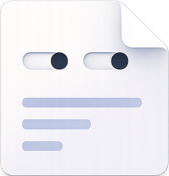
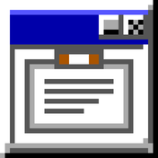
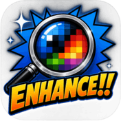
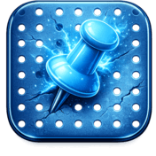
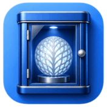

The tools
free to use · closed source · no warranty
The Markdown viewer Windows never had. Live, read-only, no vault. It never writes to your files.
Open →
Clipboard observation instrument. Every format Windows is really holding, rendered live.
Open →
GPU nearest-neighbour screen magnifier and pixel inspector. Real pixels, big and crisp, no invented detail.
Open →
A pinned, never-hijacked Explorer window for your shortcut pegboard. Exactly where you left it.
Open →
Tray-only kiosk webview. One page, full screen, no chrome. A portable folder app.
Open →Other things
odds, ends and excavationsFree to use. Closed source. Made because they needed to exist.
The tools are not products. They are the sharp little things that made a working day smoother, polished until they were worth handing out. So they are yours to use, at no cost, with no strings.
The source stays private, and that is deliberate: it is so rare that anyone actually helps a project, mostly they just fork it and make it their own. So use them freely. Just do not expect the guts.
- ✓FreeNo cost, no account, no nag.
- ✓Self-containedSmall and standalone. No cloud, no telemetry.
- ✓Windows-nativeReal apps, real chrome. Built in Rust.
- ✓No warrantyProvided as-is. If it breaks, you keep both pieces.